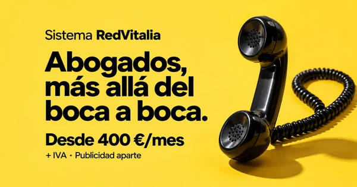

SISTEMA REDVITALIA / CAPTACIÓN DE DESPACHOSDe la publicidad
De la publicidad
a la conversación.
Las campañas, la página y la atención de cada despacho, reunidas en un mismo lugar.
LAS DOS CAMPAÑAS
Todos los formatos y alternativas ↗La selección inicial, hecha.
Meta AdsMaterial final publicado

Cinco anuncios. Cinco motivos para interesarse.
Feed · Stories · Reels
Ver anuncios finales ↗Descargar la campaña ↓Google · Performance MaxMaterial final publicado

Un grupo de recursos para captar despachos.
Búsqueda · Display · YouTube
Ver anuncios finales ↗Descargar la campaña ↓CUANDO ENTRA UN DESPACHOLa siguiente acción
Abrir contactos La siguiente acción
está en su ficha.
Solicitud recibida
Nombre, despacho, teléfono y canal.
Contactado
Conversación y siguiente acción.
Diagnóstico agendado
Fecha y responsable de la reunión.
Propuesta enviada
Oferta concreta y seguimiento.
Los cierres se registran como Ganado, Perdido o Abandonado. Las fichas y los datos personales se consultan en GoHighLevel, con tu sesión. Esta página no publica información de los despachos.
01 / CONVERSACIONESLa llamada y los correos,
El sistema,
Una página
La llamada y los correos,
listos para usar.
Guion de recepción, diagnóstico, objeciones y cinco correos terminados.
Abrir mesa comercial ↗02 / VÍDEOSEl sistema,
en veinte segundos.
Tres vídeos finales, con marca, precio y mensaje dirigido a abogados.
Ver y descargar ↗03 / LANDINGSUna página
para cada especialidad.
Ejemplos completos de Segunda Oportunidad, herencias y familia.
Ver las páginas ↗